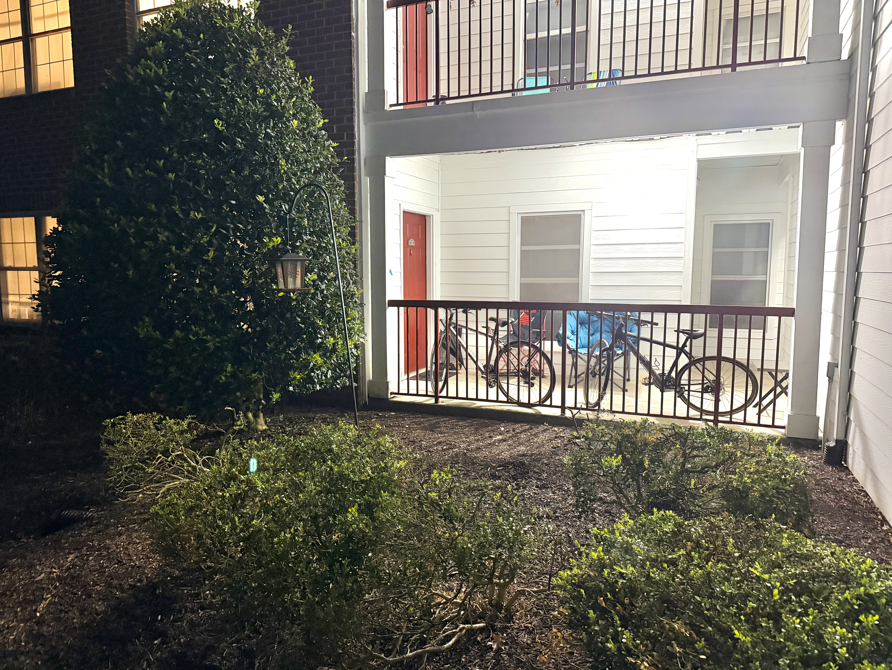

Located in the part of the Courtyards Apartment Complex that is farthest away from campus, Wade's Apartment comes with all the amenities one would expect from an apartment that has not been maintained since 2004. Live out your dreams of owning a home in a building that may not technically be legal since there is no way for people in wheelchairs to access any floor higher than the first (I'm being dead serious, UMD Courtyards may actually be technically illegal. Read about what the state of Maryland deems as discriminatory for housing). If you don't love your home, burglars sure will, since your door opens up right to the great outdoors!
Contact an agent today!
E. Scrooge
escrooge@scroogeandmarley.co.uk